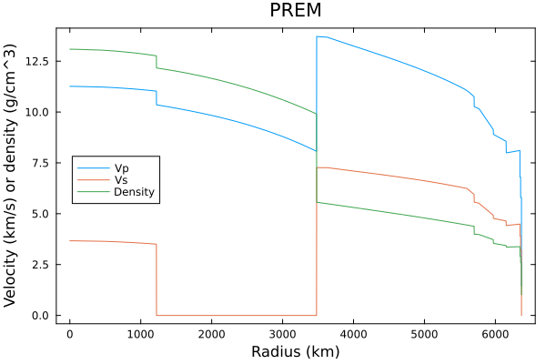

SeisModels.jl
What is SeisModels.jl?
A Julia package for dealing with models of the Earth's (and other quasi-1D planets') seismic properties. It allows you to evaluate these properties at arbitrary positions within the model and compute derived properties (such as pressure and gravity).
How to install
SeisModels.jl can be added to your Julia environment like so:
julia> import Pkg; Pkg.add("SeisModels")If all is working, you should be able to reproduce the figure below easily (using Plots.jl):
/home/runner/work/SeisModels.jl/SeisModels.jl/docs/build/PREM_example.svg
Citing
If you use SeisModels.jl for your work, please cite the following paper:
- Nowacki, A., 2020. SeisModels.jl: A Julia package for models of the Earth’s interior. Journal of Open Source Software 5, 2043. doi:10.21105/joss.02043